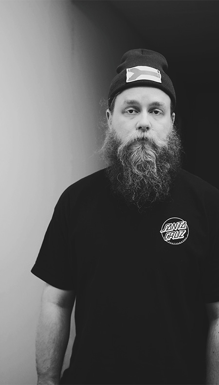

FASHION FOR EVERYBODY
Finnish designer Sasu Kauppi believes that clothes and fashion are a mobile art platform.
As I walk towards the crude warehouse right next to Hotel Clarion, in Jätkäsaari, Helsinki, I can’t help but think about what Kanye West thought when he arrived here in November 2014. Inside the rough outlooks is just as rough a staircase, with some posters taped on the walls. Finally I found the door that I assumed would be the one matching the address I was given. I walk in and can hear urban music playing from a distance. I know I’m in the right place. I knock on a door that is half open, and as I open it, I see a messy room with white walls and a bunch of clothes and different textiles laying around. “Yeah sorry it is a bit messy here, just ripped off all my research from the walls.” I found the place fascinating. It was like I was walking to a crazy scientists lab, where the boundaries of art were constantly being pushed.
This is the office of Sasu Kauppi. He is a finnish designer, who has gained attention with his avantgarde sportswear fashion. He graduated from the world famous Central Saint Martins, the school where many well known designer careers have been kickstarted. In CSM, Sasu found his vision. His teacher, the late Louise Wilson, said something that would change his mindset forever. “She said that men’s fashion does not have to be only about suits and dress shirts. Of course I hadn’t thought it should be like that, but when it comes from a person as remarkable as she was, it blows something in your mind.” After Sasu graduated from CSM, he went on to publish his own brand carrying his own name. After three years and many seasonal collections, his money and energy were running low. So in 2014 he was just about to start doing something else, when a call came, from who other than already mentioned Mr. West, who had just began working on his own Yeezy -collection for Adidas. Sasu spent the next two years working in California, but he has to remain silent about the details. When he came back to Finland in 2016, he had found the joy of evolving his own brand again.
It is 2018 and April is halfway behind, and I’m sitting there with the mastermind himself. His latest collection called SSSU was showcased just year ago, but the collection was never developed into a production line.
“Yeah the SSSU-pieces are made all by hand. I had so many other things going on in my life at that time, I even didn’t have time to promote it anywhere else than Finland. And it is kind of the opposite of what it use to be with my earlier collections, which were mainly sold in different parts of Asia and the US. Now there were six shops in Helsinki willing to sell the collection. It would have been too much for a city this size. So yeah the clothes never got developed into production. But just last week one huge retail corporation from the US contacted me and they would want to produce some of the pieces with very high volume.. We’ll see how that goes.”
Sasu has also designed merchandice pieces for the upcoming Finnish popstar Alma.
People have been waiting for another collection to be released, as it is normal in fashion industry that the brands release at least two collections a year. A new collection is in the works, but Sasu has had so many other things to do and the plans for the collection have gotten bigger, so he has decided to put out a new collection no earlier than January 2019. His time is occupied by different jobs like teaching at the Aalto University School of Arts, Design and Architecture, designing visual identities and doing space design. He has also designed some merchandice pieces for the upcoming Finnish popstar Alma.
Sasu’s collections consist mainly of different jackets, hoodies, shirts, pants, and hats. But there are not a lot of shoes or sneakers designed by him, and that is because they are hard to make with small resources. That is also the reason why we are seeing the big shoe brands like Nike and Adidas collaborating with smaller brands with a fresh vision like Bape, UNDFTD and Off_White. Sasu hints that there may be a collaborative effort between him and a certain shoe brand coming. Sneakerheads stay tuned.
I asked Sasu about where his inspiration comes from and he told me that it mainly comes from the streets of Helsinki, and from the overall street culture. He also draws from the everyday life and casual things like ice hockey. At least it is a casual thing for a Finnish man. Actually one of Sasu’s first ever collections was heavily inspired by hockeyjerseys and hockey team logos. His other collections have obtained themes from for example movies, like Back to the Future and Alien. Sasu doesn’t wanna categorize who he designs his clothes to. and he doesn’t believe in target group thinking. He thinks that the latest collection is by far the most targeted for everyone, because it’s way more commercial than the old collections. The new collection he is working on right now is going to be a mixture of commercial and art pieces. He designs clothes because he sees fashion as mobile art. It’s not like the traditional art that is only seen in galleries. With fashion everybody can wear art and express themselves just by walking in the streets.
The current state of the fashion industry, where streetwear’s rise has been the big storyline, Sasu says is because of social media and the fashion industry’s shift towards pop culture. For example Virgil Abloh is known for establishing his own brand Off_White and making it an international success. He was announced to be the artistic director for Louis Vuitton men’s wear in March 2018.“Fashion has evolved from small circle high-fashion to the situation where these big stars like Virgil Abloh are leading the industry now and are considered as “real designers”. Guys like Virgil are able to build a hype and succeed by it. Maybe there is some positive to the phenomenon also, but I think that the status should always be based on vision and skill, rather than hype.”
Another phenomenon in the clothing industry today is the drop culture. It is also revolutionizing the retail markets in all fields; companies release only a very limited amount of products at a time and build hype around the date by sending the products to celebrities, bloggers and other influential people. One of the most well known users of “the drop” is Supreme, a streetwear and accessory brand, that has made headlines by selling stuff from Zippos to backpacks to even actual bricks, everything with high prices just by putting the Supreme logo on them. They sell like hot cakes, all sold out just within minutes, and resell prices are just ridiculous. The drop culture makes sense in Sasu’s opinion. “When there is already a high demand for products like Supreme has, and you have your own shops, you can drop whenever you want. Then you can set the schedule as you like and no one gets a burn out. That is why it makes sense to me. Now in fashion industry we have big retailers that demand a certain amount of collections a year, and it is mindless, beacause creative work doesn’t work like that. You need to have time to shape the ideas. That is why the second part of SSSU -collection is coming in 2019.
And that is also why one of my missions considering the fashion industry is trying to make it more relaxed andbreak the traditional rhythm of two collections a year.” One of Sasu’s goals is that one day someone else would design something under the name Sasu Kauppi. Because that is the point when you know you have made it. Another goal of his would be to release music in a way or another, and to make himself known in some other fields and not only as a fashion designer. The third goal of his life was just fulfilled, since Sasu and his significant other had their first baby in May 2018. Big changes ahead, but Sasu seems calm and confident about the future. What the future brings, he doesn’t know for sure. He has not planned that much. He even plays with the idea of going back to California in a few years timespan; to continue his mysterious adventure, that may or may not have a connection to the Chicago born rap superstar. While we wait for what’s coming next we may check out his 10 earlier awesome collections that have been released